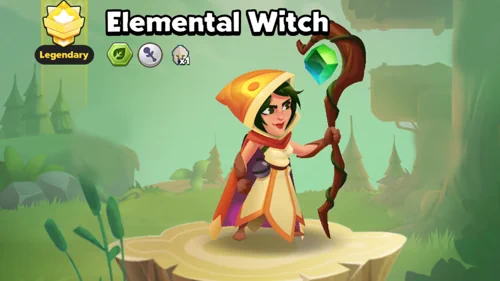

Guia da Bruxa Elemental: Domine a Maga Selvagem em Top Troops
- Por: Alexandre Domingos. .
Bruxa Elemental
Classe do Herói: Lendária
Facção: Selvagem
Classe: Maga
Dizem por aí que a mãe da Bruxa Elemental, uma poderosa feiticeira, estava sob ameaça e temia pela vida da filha, então a abandonou na floresta quando ainda era um bebê. Isso poderia ser uma história triste, mas o bebê cresceu feliz entre as criaturas da floresta e agora é uma das guerreiras mais fortes delas — além de campeã em comer tortinhas de frutas silvestres.
Atributos no Nível Máximo
Atributos: nível 300, 15 estrelas
Poder do Exército: 195 mil
Ataque: 27,59 mil
Velocidade de Ataque: 3
Pontos de Vida: 64.381
Alcance: 8
A Bruxa Elemental é uma poderosa maga de longo alcance que causa dano em área massivo enquanto empurra as unidades inimigas para trás.

Habilidades da Bruxa Elemental e Prioridade de Melhoria
1. Terra – Habilidade Principal
Efeito: Cada ataque básico cria uma área com raio 3 que empurra os inimigos para trás e os Atordoa por 1 segundo.
Atordoamento: Unidades não podem se mover nem atacar.
Prioridade: Máxima – Essa é sua principal habilidade de controle de multidão e dano, afetando todos os ataques.
2. Surto da Natureza
Efeito: Inimigos atingidos pelo ataque básico da Bruxa Elemental têm 50% de chance de ficarem Enredados por 2 segundos.
Enredado: Unidades terão sua Velocidade de Movimento reduzida a 0, mas ainda podem atacar.
Prioridade: Alta – Complementa a habilidade principal com mais controle de multidão.
3. Armadilha da Floresta
Efeito: Inimigos que entrarem em uma área de raio 3 ao redor da Bruxa Elemental terão 50% de chance de ficarem Enredados por 2 segundos.
Prioridade: Média – Oferece controle defensivo, mas com alcance limitado inicialmente.
4. Terreno Traiçoeiro
Efeito: O raio da Armadilha da Floresta aumenta para 7 e faz com que os inimigos reduzam sua Velocidade de Movimento em 50% e a Velocidade de Ataque em 30%.
Prioridade: Média-Alta (após desbloqueio) – Aumenta bastante a eficácia da Armadilha da Floresta.
Prioridade Recomendada de Melhoria:
- Terra – Habilidade Principal: Sempre priorize primeiro, pois melhora seu dano principal e controle de multidão.
- Surto da Natureza: Faça o upgrade em seguida para maximizar o potencial de controle nos ataques.
- Terreno Traiçoeiro: Assim que disponível, foque nele para melhorar significativamente sua capacidade defensiva.
- Armadilha da Floresta: Deixe por último, já que sua forma básica já é eficaz no início e meio do jogo.
Essa ordem de prioridade foca primeiro em fortalecer seu controle de multidão e dano ofensivo, depois melhora sua defesa, tornando a Bruxa Elemental uma ameaça versátil em todas as distâncias.
Bruxa Elemental – Prioridades Ideais de Equipamento com foco em estatísticas principais

1º – Velocidade de Ataque:
Maior prioridade, pois se combina diretamente com Terra (Habilidade Principal) e Surto da Natureza, permitindo ataques mais frequentes que ativam atordoamentos em área e efeitos de enredamento. Ataques mais rápidos significam mais controle de multidão.

2º – Ataque:
Aumenta o dano causado pelos ataques em área. Embora o controle de multidão seja sua principal força, mais dano torna seus empurrões mais ameaçadores e ajuda a limpar ondas de inimigos mais rapidamente.

3º – Velocidade de Movimento:
Ajuda na melhor posição para utilizar o efeito de área da Armadilha da Floresta e manter distância segura. Também permite reposicionamento mais rápido após empurrar os inimigos.

4º – Pontos de Vida:
Como uma unidade de longo alcance com controle de multidão, sobreviver é essencial para continuar aplicando seus efeitos. Complementa a falta de atributos defensivos.

5º – Recarga:
Benefício secundário, já que a maior parte do poder dela vem dos ataques básicos, mas ajuda com quaisquer habilidades ativas que ela possa ter.
Equipamentos de Menor Prioridade (Não Recomendados):
- Chance/Dano Crítico: Suas habilidades não se beneficiam de críticos.
- Chance de Bloqueio/Defesa: Não é ideal para uma maga na retaguarda.
- Roubo de Vida: Não possui sinergia com seu conjunto de habilidades.
Estratégia de Evolução de Equipamentos: Foque primeiro em maximizar a Velocidade de Ataque para potencializar o controle de multidão, depois equilibre com Ataque para aumentar a ameaça. Velocidade de Movimento e PV trazem melhorias de qualidade de vida. Ignore atributos defensivos, já que ela não deve receber ataques diretos.
Bruxa Elemental – Prioridade na Árvore de Talentos
1º – Dano
Por quê: Amplifica diretamente a eficácia dos ataques em área da habilidade Terra (Habilidade Principal) e o DPS geral. Mais dano torna seus empurrões mais perigosos e ajuda a eliminar ondas de inimigos mais rápido. Tem sinergia perfeita com seu papel de maga de controle de área.
2º – Velocidade de Ataque
Por quê: Aumenta a frequência dos ataques básicos, que ativam tanto o atordoamento (Terra) quanto o enredamento (Surto da Natureza). Mais ataques = mais controle de multidão. Essencial para maximizar seu potencial de interrupção.
3º – Vida
Por quê: Garante sobrevivência para que ela mantenha sua posição nas batalhas. Mesmo sendo de longo alcance, um pouco de vida extra permite resistir a alguns danos ou ataques em área, mantendo sua aplicação de controle de multidão ativa.

Sinergia dos Talentos com as Habilidades:
- Dano + Habilidade Terra: Ataques com empurrões mais fortes que podem eliminar inimigos enfraquecidos
- Velocidade de Ataque + Surto da Natureza: Mais chances de ativar o efeito de enredamento
- Vida + Armadilha da Floresta: Permite que ela sobreviva mais para usar sua zona de enredamento defensiva
Talentos a Evitar:
- Chance/Dano Crítico: Suas habilidades não se beneficiam de acertos críticos
- Talentos Defensivos (Bloqueio/Defesa): Não são ideais para uma maga na retaguarda
Foque exclusivamente em talentos que ampliem seu papel principal como maga de controle de área com foco em multidões.
Melhores Aliados para a Bruxa Elemental
Principais Parceiros com Sinergia:
- Tanques de Linha de Frente (Guardião de Pedra, Lâmina de Gelo): Mantêm os inimigos afastados enquanto ela aplica controle de grupo com segurança
- Cura (Sacerdote Sagrado, Druida): Compensam sua baixa defesa com cura contínua
- DPS de Alvo Único (Assassino Sombrio, Arqueiro Flamejante): Eliminam alvos prioritários que ela atordoa ou enreda
- Outros Magos de Dano em Área (Chamador da Tempestade): Empilham efeitos de controle em área para máxima desestabilização
Análise de Sinergia:
- Seus empurrões/atordoamentos criam aberturas perfeitas para aliados corpo a corpo
- Os efeitos de enredamento permitem que aliados à distância foquem os alvos com mais facilidade
- As lentidões do Terreno Enganoso ajudam aliados que dependem de posicionamento
Counters da Bruxa Elemental
Forte Contra:
- Amethyst Wanda/Magos: Interrompe canalizações com atordoamentos frequentes
- Tanques da Linha de Frente: Pode empurrá-los e quebrar a formação inimiga
- Unidades Corpo a Corpo Lentas: Pode mantê-las sob controle de grupo constante com o tempo certo
Fraca Contra:
- Assassinos (Sombra, Lâmina Noturna): Conseguem ignorar seu controle e eliminá-la rapidamente
- Snipers de Longo Alcance: Conseguem atacá-la fora do alcance de seus empurrões/atordoamentos
Conclusão
A Bruxa Elemental se destaca como uma maga de retaguarda com alto poder de desestabilização e controle de área. Sua combinação de:
- Atordoamentos frequentes (habilidade Terra)
- Redução de movimento (Surto da Natureza/Armadilha da Floresta)
- Desorganização de posicionamento (empurrões)
A torna ideal para:
- Combater composições com muitos magos
- Desestruturar formações da linha de frente
- Permitir que aliados foquem em alvos com mais eficiência
Dica de Estilo de Jogo: Posicione-a com segurança atrás dos tanques, priorize velocidade de ataque para maximizar o controle de grupo, e combine com causadores de dano de alvo único para aproveitar ao máximo seus efeitos debilitantes.
Você pode ter interesse:
 Guia de Top Troops: Dominando Sekhmet, a Unidade Lendária de Suporte
Guia de Top Troops: Dominando Sekhmet, a Unidade Lendária de SuporteDeixe Sua Opinião!
Você gostou do nosso Guia da Bruxa Elemental em Top Troops? Há algo que não entendeu ou gostaria de sugerir mudanças? Convidamos você a se juntar à nossa sessão de comentários na página do Alexandre Games Blog. Não hesite em expressar sua opinião, clarificar suas dúvidas e compartilhar sua sugestões.
Clique no botão abaixo para começar: